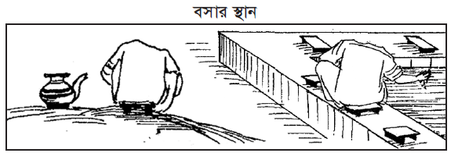
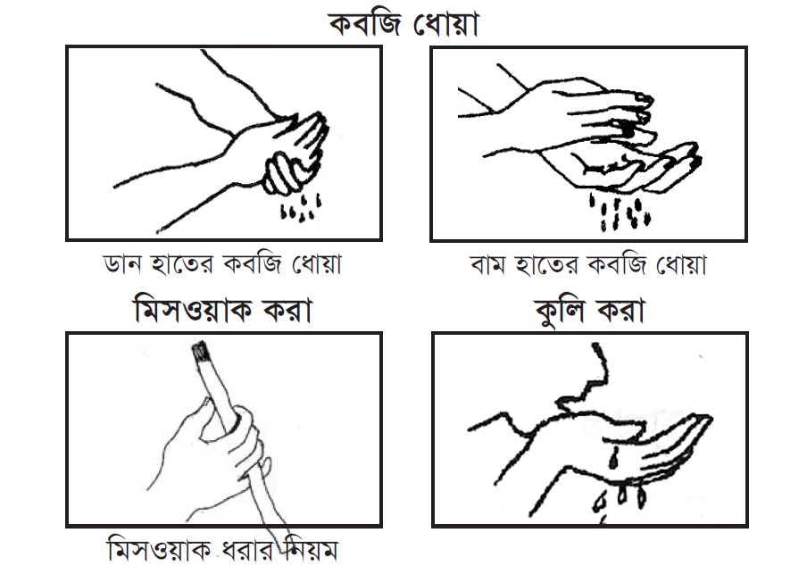
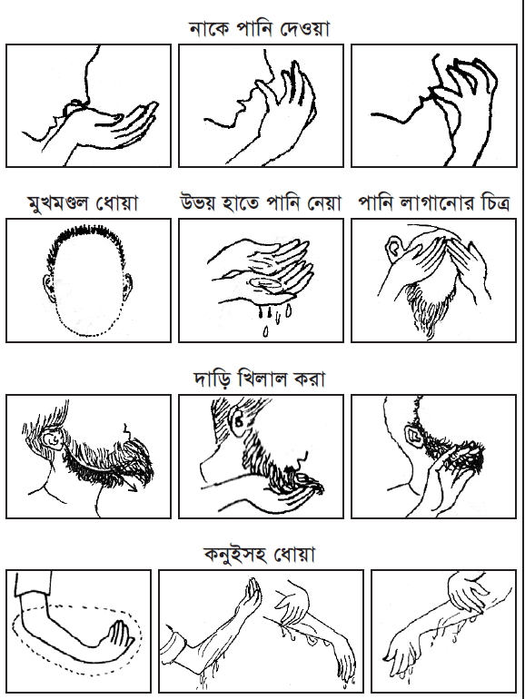
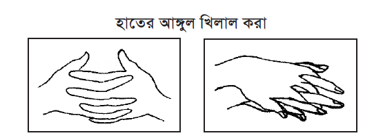
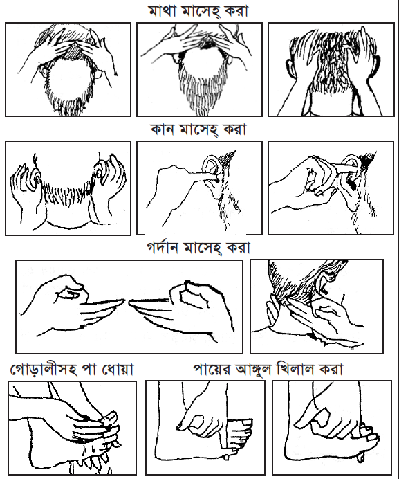

অজু সঠিক নিয়মে না হলে নামাজ আদায় হয় না। সুতরাং সুন্নাত তরীকায় অজু করার নিয়ম জানা অনেক গুরুত্বপূর্ণ। অজুর কতিপয় নিয়মগুলো নিম্নরুপঃ >>নিয়তঃ আমি পবিত্রতা অর্জন করা বা ইবাদাত করা অথবা আল্লাহর নৈকট্য অর্জন করার জন্য অজু করছি ।





>>প্রথমে উভয় হাতের কবজি পর্যন্ত ধোয়া : বাম হাতে পানি নিয়ে ডান হাতের কবজি তিনবার ধৌত করবে। এরপর ডান হাতে পানি নিয়ে বাম হাতের কবজির উপর পানি ফেলে তিন বার ধৌত করবে। হাতে নাপাকী থাকলে যে কোন উপায়ে প্রথমে হাত ধুয়ে নিতে হবে >> মিসওয়াক করাঃ কুলি করার পূর্বে মিসওয়াক করা সুন্নাত। মিসওয়াক অজু শুরু করার পূর্বেও করা যায়। মিসওয়াক না থাকলে কিংবা মুখে ওজর থাকলে বা দাঁত না থাকলে আঙ্গুল দিয়ে হলেও ঘষে নিবে। >> কুলি করাঃ ডান হাতে পানি নিয়ে কুলি করবে। রোজাদার না হলে গড়গড়া করা সুন্নাত। তিনবার কুলিকরা সুন্নাত। তিনবারের জন্য আলাদা আলাদা তিনবার পানি নিতে হবে। >> নাকে পানি দেওয়াঃ ডান হাতে নাকে পানি দিবে এবং বাম হাত দ্বারা নাক ঝাড়বে। বাম হাতের কনিষ্ঠাঙ্গুলের অগ্রভাগ দিয়ে নাক পরিষ্কার করবে। তাছাড়া কনিষ্ঠ ও বৃদ্ধাঙ্গুল দিয়েও নাক পরিষ্কার করা যায়। তিনবার নাকে পানি দেওয়া সুন্নাত। রোজাদার না হলে নাকের নরম স্থান পর্যন্ত পানি পৌঁছানো উত্তম। নাকে অলংকার এবং হাতে আংটি থাকলে তা নাড়া- চাড়া করে নিচে পানি পৌঁছে দেওয়া ওয়াজিব। >> মুখমন্ডল ধোয়াঃ উভয় হাতে পানি নিয়ে সমস্ত মুখমণ্ডল ধৌত করবে। অর্থাত্ কপালের চুলের গোড়া থেকে থুতনীর নিচ এবং উভয় কানের লতি পর্যন্ত এমনভাবে পানি পৌঁছানো, যাতে উক্ত অঙ্গ থেকে পানি ফোঁটা ফোঁটা নিচে গড়িয়ে পড়ে।একবার ধোয়া ফরজ, তিনবার ধোয়া সুন্নাত। >> দাড়ি ও গোঁফ খুব ঘন হলে শুধু ধোয়া ফরজ। চামড়ায় পানি পৌঁছানো ফরজ নয়।দাড়ির ভেতরে আঙ্গুল চালিয়ে খিলাল করে নিবে । >> উভয় হাত কনুইসহ ধৌত করবে। একবার ধোয়া ফরজ, তিনবার ধোয়া সুন্নাত। হাতধোয়ার সময় আঙ্গুল খিলাল করবে, যাতে আঙ্গুলের গোড়ায় পানি পৌঁছে যায়।অর্থাৎ এক হাতের আঙ্গুল অপর হাতের আঙ্গুল সমূহের মধ্যে প্রবেশ করাবে। কারো আঙ্গুলের মধ্যে যদি ফাঁক না থাকে এবং আঙ্গুলের সাথে অপর আঙ্গুলএমনভাবে লেগে থাকে যার কারণে আঙ্গুলের সাথে পানি না পৌঁছার আশঙ্কা থেকে যায়, এঅবস্থায় খিলাল করা ওয়াজিব। >>মাথা মাসেহ করাঃ মাথার চারভাগের একভাগ মাসেহ করা ফরজ, সমস্ত মাথা মাসেহ করা সুন্নাত। >> মাথা মাছেহের নিয়মঃ বৃদ্ধ ও তর্জনী আঙ্গুলদ্বয় ব্যতীত অবশিষ্ট উভয় হাতের আঙ্গুলের পেট মাথার মধ্যভাগে সামনে হতে পিছন দিকে টেনে নিয়ে যাবে। অতঃপর দুই হাতের তালু মাথার দুই পাশে রেখে পেছন দিক থেকে সামনে টেনে নিয়ে আসবে। >> কান মাসেহ করাঃ উভয় হাতের বৃদ্ধ আঙ্গুলের পেট দ্বারা দুই কানের পেছনের অংশ মাসেহ করা। এরপর কনিষ্ঠ আঙ্গুলের অগ্রভাগ দ্বারা কানের ছিদ্র এবং তর্জনী আঙ্গুলের সাহায্যে কানের পাতার ভেতরে অংশ মাসেহ করা সুন্নাত। >> গর্দান মাসেহ করাঃ উভয় হাতের তিন আঙ্গুলের পিঠ দ্বারা গর্দান মাসেহ করবে। গলা মাসেহ করবে না। >> গোড়ালী ও টাখনুসহ পা ধোয়াঃ ডান হাত দিয়ে পায়ের অগ্রভাগে পানি ঢালা সুন্নাত। বাম হাত দিয়ে পায়ের সামনে পেছনে এবং তলদেশ মর্দন করবে। পা দিয়ে পা ঘষে এবং বাম হাতের কনিষ্ঠ আঙ্গুল দিয়ে পায়ের আঙ্গুলসমূহ খিলাল করে নিবে। >> অজুর শেষে কালিমায়ে শাহাদাত্ পড়া মুস্তাহাব।